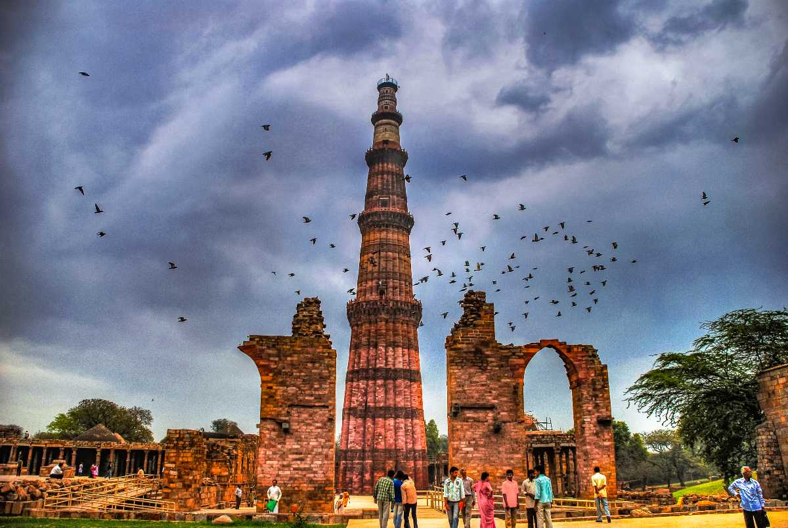

Monuments of India
Taj Mahal, Agra:
The Taj Mahal is more than just a mausoleum - it is has been described by the poet Rabindranath Tagore as a "teardrop on the cheek of eternity". As an expression of the height of the Mughal dynasty's architectural genius in the Indian subcontinent, as the symbol of a bereaved emperor's love for his empress, and as an inspiration to countless photographers and artists who have tried to capture its many subtle nuances of light and shade, the Taj Mahal continues to captivate people worldwide with its history, its design, and its symbolism of eternal love.
The Taj Mahal is an integrated complex of structures that include a white marble mausoleum containing the tombs of the Mughal emperor Shah Jahan (1592 - 1666) and his third wife Mumtaz Mahal (1593-1631). The Mughal dynasty built many mausoleums in the Indian subcontinent but the Taj Mahal is undoubtedly the finest. The mausoleum is built entirely of white marble, set on a high base or plinth which includes four tall minarets, one on each corner. On either side of the tomb are a mosque and a guest house, while the tomb faces a garden laid out in the "charbagh" style, with a central walkway with fountains and viewing platforms with green spaces and trees on either side. The entrance to the complex is through a grand ornamental gateway, inscribed with Quranic inscriptions and the calligraphed line "O Soul, thou art at rest. Return to the Lord at peace with Him, and He at peace with you."
Hawa Mahal, Jaipur:
The regal Hawa Mahal is perhaps one of the oft visited tourist destinations of the lovely Pink City of Jaipur. Instituted by the famed maharaja Sawai Pratap Singh, circa 1799, the 'palace of the winds', is the repository of history and tradition of the colorful state of Rajasthan.
A portion of the magnificent City Palace, the Hawa Mahal is a stupendous melange of Rajasthan and Mughal schools of architecture. Etched in punk hued sandstone, it soars up to a height of about five stories and is one of the most remarkable monuments of Rajasthan.
The brain child of Lal Chand Usta, it comprises of nine hundred and fifty three tiny jharokha adorned, curved roofed cells, that cuts a comely picture. The unembellished and stark back portion of the mahal may, however, intrigue visitors.
Legend has it that the purpose of building this arresting site was to enable the purdah clad womenfolk to soak in the feel of the sights and sounds of the place.
Enchanting views of the majestic Jantar Mantar, the celebrated observatory, the grand City Palace and the bustling Siredeori Bazaar is the unique selling protocol of the beautiful Hawa Mahal. The history buffs can queue up at the museum and catch a glimpse of the glorious regal life.
It is said that the stunning Hawa Mahal is in its glorious best when the golden rays of the morning sun caresses it. So, troop to this tourist hotspot and be a witness to breathtaking beauty and splendor.
Lotus Temple:
Designed by Fariborz Sahba the Lotus Temple is one of the greatest pieces of architecture in New Delhi. Located at Mandir Marg of South Delhi the Lotus Temple is one of the major tourist attractions of New Delhi. Built in the shape of a half opened lotus flower the temple serves as a Mother Temple in India. This temple is also popularly known as Bahai Temple as it is a place of worship meant for the Bahai's.
Lotus Temple can be easily reached by metro. Riding on a Nehru Place- Kalkaji Mandir metro it is visible as a white oval structure. Than, from Kalkaji Mandir it is just a 5 minutes walking distance. This white marble structure has altogether 27 lotus petals arranged in a symmetrical pattern. View of Lotus Temple from the air looks astounding. It was made to look like a lotus floating on blue water. Nine small pools surround the building. To make it a perfect structure there are nine inner petals and nine doors open in different directions.
The Lotus Temple at New Delhi is visited by people from all religious faiths. The tranquility of the place is ideal for meditation. The temple embraces an independent religion called Bahai faith. The architecture represents a blend of both traditional and modern engineering expertise. The brainchild behind the architecture of this temple is a Canadian architect named Fariborz Sahba. He took 10 long years in planning the design and implementing it. The temple is surrounded by sparkling pools. It has been constructed by using cement, marble, sand and dolomite.
Completed in 1986 the Lotus Temple has 27 giant white marble petals and nine pools. The temple has got double curved surfaces. The steel used for making the shells of the petals were galvanized to protect it from rust. These shells have got a thickness of about 6 to 8 centimeters. There are six other Bahai temples in the world. Though some concepts are same, but each of them differs in their cultural identity.
The Lotus Temple in New Delhi was inaugurated in 1986. It is open to the general mass from 9:00 am to 7:00 pm in the summer months and 9:30 am to 5:30 pm during the winter months. The temple remains closed on Mondays. This temple is a must visit place of New Delhi.
Mysore Palace, Karnataka:

In the center of the city of Mysore at Mirza Road stands in the former residence of the royal family of Mysore. The Mysore Palace is one of the chief Mysore tourists attractions and is a living exponent of the Indo Saracenic style of architecture. The palace was constructed in the year 1912 for the twenty fourth king of the Wodeyar dynasty. Designed by the British architect, Henry Irwin, the palace of Mysore is one of the biggest palaces of the country.
The palatial building is also reputed as the Amba Vilas. It was built after the former wooden palace was destroyed by fire in the year 1897. The three storied building of the palace stretches across a length of 245 feet and 156 feet in breadth. The avenue standing in front of the palace is covered with a dome that rises to a height of 145 feet and is decorated in gold. The main entrance of the palace is the royal elephant gate that is decorated with motifs and bears the royal symbol of the double headed eagle. A stroll down the Kalyana Mantapa or the pavilion for the royal marriages will reveal the stained glasses, chandeliers, glazed tiles and the iron pillars gathered from different parts of the world. The tourists may visit the Diwan-e-Aam and the Diwan-e Khas. A number of temples surround the palace complex.
Charminar, Hyderabad, Telangana:
The charm of the Charminar is unparalleled that will never fade. The sheer artistic brilliance embodied in the monument is one of Hyderabad's claims to fame. The marvelous structure, standing on four pillars, in Hyderabad is an architectural marvel of the past, which combines art with religious themes.
Charminar is one of the seven wonders of Hyderabad and is one of the most famous tourist attractions and is visited by international as well as national tourists. It is a glorious representation of the history of Hyderabad and stands erect till date, narrating the story of the illustrious past of this historical city, once the seat of the Nizam. This marvelous piece of architecture is made of granite, mortar, limestone and powdered marble which has enabled it to stand strong though the years. Hyderabad is almost synonymous to Charminar. It is a blend of architectural splendor with aesthetics and is the embodiment of elegance and romance. It is an unparalleled structure that makes Hyderabad famous all over the world.
The Story Behind the Construction of Charminar :
This architectural brilliance was erected during the reign of Muhammad Quli Qutb Shah in 1591. He had shifted his capital from Golconda to Hyderabad and this monument was built to commemorate this decision and the eradication of plague from the city. The structure came to be known as Charminar since it is supported.
The Gateway of India:
The Gateway of India is one of the architectural marvel of our country. Located on the southern part of Mumbai on the shores of Arabian Sea, the Gateway of India is an important landmark of the city. It is virtually the starting point for any tourist who wants to get acquainted with the exuberant and exciting life of Mumbai. The huge monuments speaks at length about the history of our country. The beautifully engraved designs and the well built pillars remind us of the colonial rule and the sacrifices of our fellow country men.
History:
The Gateway of India was built in 1924 to celebrate the arrival of King George V and Queen Mary. The design and the plan was given by George Wittet which was approved by the then Governor General of Mumbai, Sir George Sydenham Clarke. The construction began in 1911 and took thirteen years for the entire project to be completed. The Gateway of India was inaugurated by the Viceroy, the Earl of Reading on 4th December, 1924. The Gateway of India became all the more symbolic when the last British Force left our country on 28th February 1948.
Qutub Minar:

One of the most important tourist centers in India Delhi is home to some of the finest monuments in the world. Mostly built during the Mughal reign in India the monuments in Delhi represent a rich and rich style of architecture. The Qutub Minar in Delhi is apparently the largest tower in the world built by one of the Mughals.
Qutub Minar was constructed in 1192 by Qutab-ud-din Aibak, by the founder of Slave Dynasty and later completed by his son-in-law and successor Iltutmish. The Qutub Minar is the tallest brick minaret in the world. Built exclusively in red brick and sandstone this minaret in Delhi is an exquisite example of Indo-Islamic Afghan architecture.
Today, Qutub Minar is an eminent member of the World Heritage Site community and has managed to stand firm despite the ravages of time. Qutub Minar of Delhi is surrounded by a lush green manicured garden, which is a much favored leisure spot for Delhi locals. You can see tourists and locals loitering around the whole winter afternoons here and there inside the tower.
Qutub Minar at Delhi is a 5 storied tower. Each tower of the famous Qutub Minar has unique designs. It was hit by lightening twice. Due to this hazard, there was major damage in the structure. But during the reign of Muhammad-bin-Tughlaq, the king repaired the ensuing damage. Again during the reign of Emperor Feroze Shah Tughlaq, when the top most storey of the Qutub Minar was destroyed, the king repaired the floor and elevated the Qutub Minar to another level.
Sanchi Stupa, Bhopal:
Sanchi doesn't need any introduction for being already tagged as one of the most significant places in India. The place is all about Buddhism and is a small village that is located at a distance of about fifty-two kilometers from Bhopal, Madhya Pradesh. Sanchi is a famous sightseeing destination that has innumerable Buddhist structures, pillars and monasteries. The majority of these monuments date back to the era between the 3rd and 12th century and Sanchi is now listed under the world heritage sites by UNESCO.
The History:
Ashoka the Mauryan emperor was the initiator of all the "Stupas" at Sanchi. These Stupas are a tribute to Lord Buddha. Of all the stupas, the Sanchi Stupa is the most important and impressive Stupa carved out of a semi-circular rock. This great monument has been built to enshrine the relics of Lord Buddha. Sanchi is one of the famed places that are not only recognized in India but across the world. Today, this place has become a legendary hub of Buddhism.